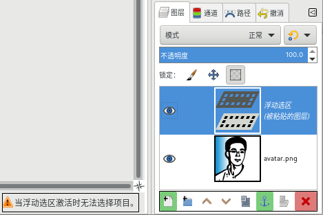

选择→浮动
快捷键：Ctrl+Shift+L
此命令会把选区转换为浮动选区。
浮动选区(也称为浮动图层)是一种临时图层，它与普通图层不太一样，具体请参考下面的提示。
提示
浮动图层/浮动选区不同于一般图层，它遵循以下规则(请参考下面图片)：
图像中浮动选区只能存在唯一一个，所以浮动选区无法被复制；
浮动选区存在时，您只能编辑浮动选区的内容，无法编辑其他图层，也无法选择其它图层；
浮动选区存在时，如果点击图层堆栈中的其它图层，图层堆栈底部的按钮栏和图像窗口下方的状态栏会闪烁显示边框，且状态栏会提示“当浮动选区激活时无法选择项目”字样，提醒您需要先处理浮动选区图层；
浮动选区存在时，图层堆栈底部的按钮栏中，创建新图层、固定图层、删除图层这三个按钮会彩色高亮显示，提醒您需要先处理浮动选区图层；
如果想选择/编辑其它图层，必须先将浮动选区“固定”或“删除”，即下面第6条中的操作方法；
浮动选区存在时，点击 创建新图层 按钮，会把浮动选区图层固定为一个单独的新图层；点击 固定图层(Ctrl+H) 按钮，会把浮动选区图层内容固定到其下方的图层中，与下方图层混合；点击 删除图层 按钮，会删除浮动选区图层；
鼠标点击浮动选区边界以外的其它区域，等同于点击 固定图层 按钮，会把浮动图层的内容固定到其下方的图层中；
浮动选区存在时，很多与图层有关的菜单命令会显示为灰色不可用，比如 图层→堆栈 菜单中的命令和 图层→蒙版 菜单中的命令。

图层堆栈中的浮动选区(上方图层)
固定浮动图层
固定浮动图层的意思是指把浮动图层转换为普通图层，或者把浮动图层混合到其它普通图层。因为只有固定了浮动图层以后，您才可以对其它图层进行操作。
固定浮动图层的方法请参考上面提示的第6条和第7条。